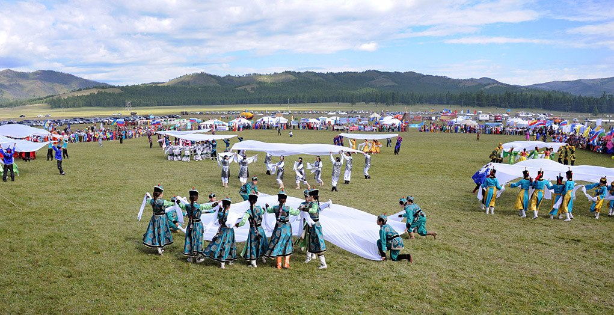

Население
Численность населения республики Тыва по данным Росстата составляет 337 544 чел. (2024). Плотность населения — 2,00 чел./км2 (2024). Городское население — 54,6 % (2022).
Динамика численности населения
| Год | Численность населения | Прирост/Убыль |
|---|---|---|
| 2010 | 307 930 | — |
| 2015 | 319 500 | +11 570 |
| 2020 | 329 300 | +9 800 |
| 2024 | 337 544 | +8 244 |
Национальный состав
Республика Тыва отличается уникальным национальным составом. Основные категории населения представлены ниже:
- Тувинцы: 82% (коренное население региона).
- Русские: 16%.
- Представители других национальностей: 2% (хакасы, буряты и др.).
Демографические показатели
- Плотность населения: 2,00 чел./км².
- Городское население: 54,6%.
- Сельское население: 45,4%.
- Средний возраст населения: 29 лет.